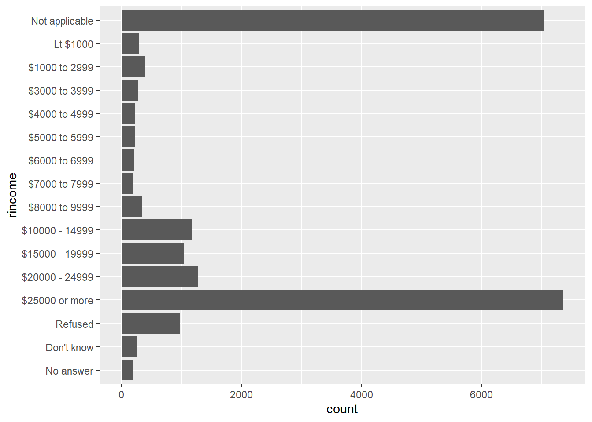

Now that we have dived into the forcats package, let’s practice it!😎
1.1 Have a look at the survey gss_cat
# WRITE YOUR CODE HERE1.2 What are the levels of the categorical variable income of the survey’ respondents?
# WRITE YOUR CODE HEREIn general, income levels are in the order. But, let’s supposed that we work with a reshuffled income.
reshuffled_income <- gss_cat$rincome %>%
fct_shuffle()
levels(reshuffled_income)## [1] "$7000 to 7999" "$6000 to 6999" "No answer" "$3000 to 3999"
## [5] "$4000 to 4999" "$15000 - 19999" "Don't know" "$10000 - 14999"
## [9] "Refused" "$8000 to 9999" "Not applicable" "$1000 to 2999"
## [13] "$20000 - 24999" "$25000 or more" "Lt $1000" "$5000 to 5999"Use the function fct_relevel() to manually reorder the reshuffled_income levels in the same way it was originally ordered. Hint: remember that by default the first level we write is moved to the front.
# WRITE YOUR CODE HEREUsing the function fct_rev() reverse the order that you have given in the last exercise.
# WRITE YOUR CODE HEREHave a look at of the next graph.
ggplot(gss_cat, aes(x = rincome)) +
geom_bar() +
coord_flip() 
It is a bit disordered, right? Organize it by frequency. Hint: use the function fct_infreq.
# WRITE YOUR CODE HEREDisplay the same graph, but reduce the number of levels to 5. The remaining levels sum them up into an “other” category. Hint: use the function fct_lump.
# WRITE YOUR CODE HEREFor reasons of simplicity, you prefer to display the income information summing up first and second level of the variable, third and forth, and so on. Group all no numerical answers in the last level. Use the function fct_collapse() to organize it. You don’t need to do a graph.
# WRITE YOUR CODE HEREYou are an expert on forcats already! 😺